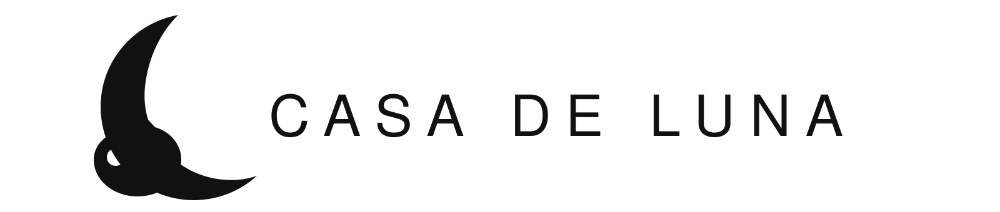

Siap diadopsi
Siap diadopsiLuna
Penyayang · tenang
→
♥ Bersama, lebih banyak kucing pulang✦ Casa de Luna · rumah bagi cerita ✦
Di Casa de Luna, kucing-kucing yang diselamatkan mendapatkan waktu, perawatan, dan kesempatan untuk menemukan rumah yang aman.
Rumah, bukan sekadar tempat.
Tapi rasa aman.


Cerita dari Casa de Luna
Dari jalanan yang sepi, kini ia menemukan rumah, nama, dan cinta. Cerita-cerita kecil ini mengingatkan kita bahwa pulang kadang dimulai dari satu tangan yang mau berhenti dan peduli.
Baca ceritanya →Kenali beberapa anabul kami
Siap diadopsiPenyayang · tenang
→ Siap diadopsi
Siap diadopsiPenuh rasa ingin tahu
→ Dalam perawatan
Dalam perawatanKecil, tetapi pemberani
→Ada banyak cara untuk membantu
Setiap bentuk dukungan membantu Casa de Luna memberi tempat yang aman, perawatan, dan harapan.
Kebaikan selalu menemukan jalannya. ♡Casa de Luna Pet Hotel
Jurnal Casa de Luna

Ada yang hadir sebentar, tetapi cahayanya tinggal lama di hati.
Baca kisah →
Yang patah tidak selalu perlu diperbaiki agar layak dicintai.
— Dari rumah kecil kami Caring
CaringTentang Casa de Luna
Casa de Luna hadir untuk memberi kucing-kucing terlantar ruang yang aman untuk pulih, bertumbuh, dan—ketika waktunya tiba—menemukan keluarga yang tepat.
Kami percaya bahwa merawat bukan hanya tentang menyelamatkan hari ini, tetapi juga membangun kehidupan yang lebih baik untuk hari esok.
Kenali kami lebih dekat →